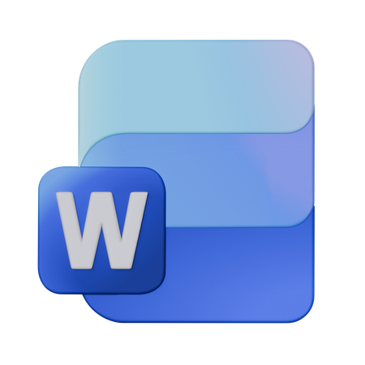

Fortalecimiento de competencias digitales
INCATEPROF

Microsoft Word es una herramienta ofimática utilizada para crear, editar y organizar documentos digitales. Permite elaborar informes, planificaciones, documentos administrativos y materiales educativos.
Los docentes pueden utilizar Word para elaborar planificaciones, informes, actividades, evaluaciones y diferentes documentos de apoyo para sus procesos educativos.
Elabore un documento en Microsoft Word aplicando los siguientes elementos:
Puede complementar el aprendizaje mediante videos tutoriales y ejemplos prácticos sobre el uso básico de Microsoft Word.